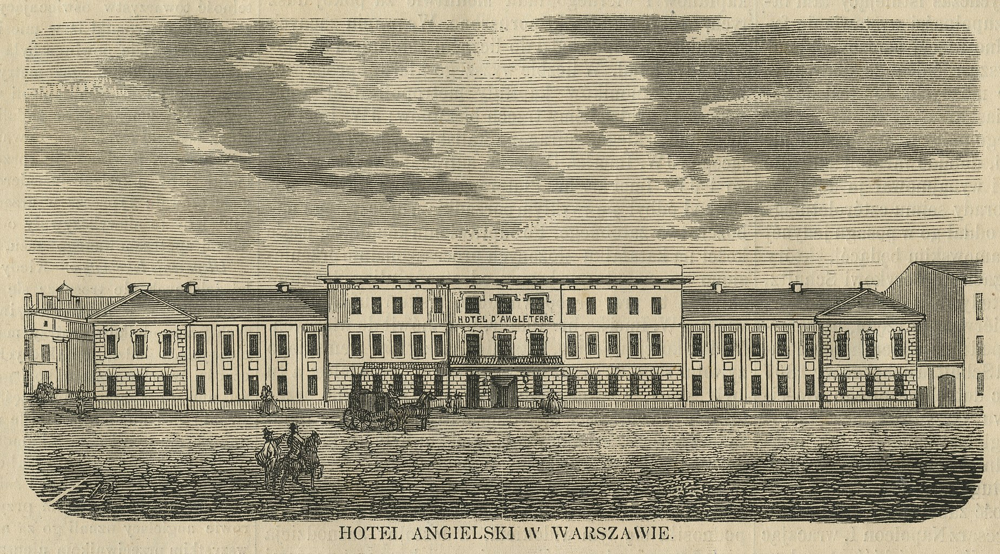
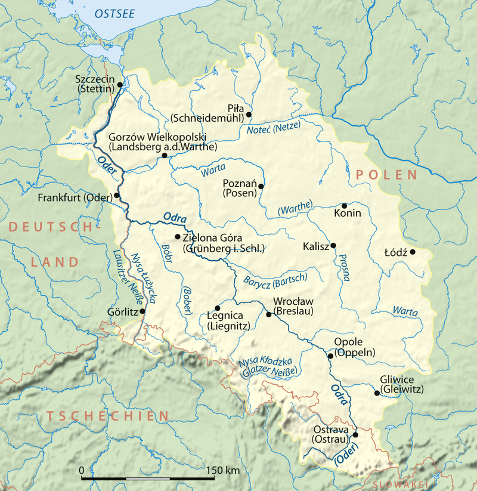
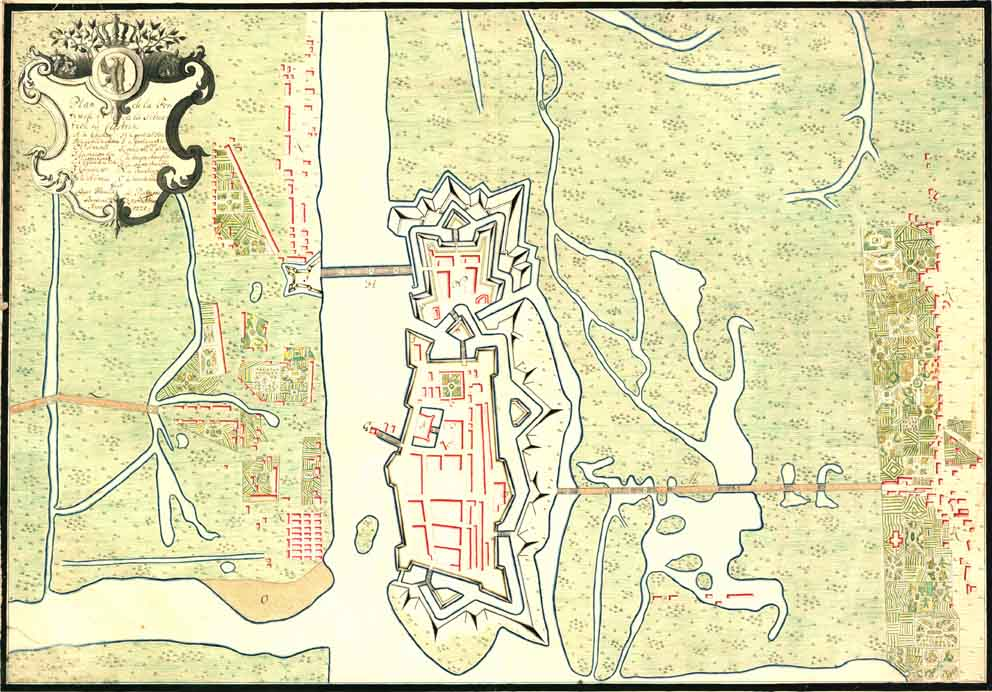

영국 호텔의 귀빈 - 바르샤바의 나폴레옹
게시: 2022-01-17T06:30:35+09:00
12월 5일 스모르곤에서 그랑다르메를 떠나 파리로 향한 나폴레옹은 12월 7일 코브노를 거쳐 네만 강을 건넜습니다. 처음에는 바퀴 달린 마차를 타고 달렸으나, 도중에 썰매 위에 낡은 마차 객실을 얹은 엉성한 썰매 마차로 바꿔탔는데, 이 조악한 차량은 문짝도 잘 맞지 않아 차가운 외풍이 가혹하게 들이쳤습니다. 당시 나폴레옹의 기분을 가장 생생하게 증언할 수 있는 사람은 바로 같은 마차칸에 타고 있던 유일한 사람인 콜랭쿠르였고, 그는 생생한 기록을 남겨놓았습니다. 당연히 나폴레옹은 처음에는 기분이 착 가라앉아 거의 말을 하지 않았으나, 네만 강을 건너고나자 점점 기분이 좋아져서 콜랭쿠르를 상대로 예전처럼 온갖 이야기를 지치지 않고 떠들어댔습니다. 다만 그 이야기의 내용은 과히 바람직하지도 현실적이지도 않았습니다. 나폴레옹은 그랑다르메의 패잔병들이 뮈라의 지휘 하에 빌나를 사수할 것을 믿어 의심치 않았고, 이 러시아 원정에서 나폴레옹이 입은 피해 규모에 대해 세세히 따져보는 것을 단연코 거부했습니다. 나폴레옹이 콜랭쿠르에게 떠들어댄 내용은 딱히 주목할 만한 점은 없습니다. 자신은 언제나 세계 평화를 갈망했다는 둥, 폴란드 왕국을 재건하는 것이 목표였다는 둥, 이렇게 야전에서 뼈빠지게 고생하는 것이 자신의 나이에는 맞지 않는다는 둥 (당시 그의 나이 43세였습니다), 뭐 그런 것들이었습니다. 다만 한가지 점은 주목할 만 합니다. 그는 콜랭쿠르에게 자신이 평화를 갈망했지만 싸워야 했던 이유가 바로 영국 때문이라고 했습니다. 온 유럽이 '그 악마 같은 섬 것들'에게 착취 당하고 있는데 유럽 사람들은 그걸 깨닫지 못하고 있기 때문에 어쩔 수 없이 자신이 나서야 했다는 것이었습니다. 이건 나폴레옹이 큰 그림을 볼 줄 안다는 것을 반증하는 이야기였습니다. 애초에 러시아 원쟁을 떠나게 된 직접적인 이유가 러시아가 영국과의 교역을 재개했기 때문이었지요. 이렇게 영국을 저주하는 동안, 12월 10일 이른 저녁 나폴레옹의 썰매는 바르샤바에 도착했습니다. 그는 다리 운동도 할 겸, 썰매에서 내려 바르샤바 시내를 걸어서 숙소로 향하면서 바르샤바 시민들이 자신을 알아볼지 기대를 했습니다만, 콜랭쿠르와 함께 둘이서 걷는 동안 그 누구도 푸른 색 벨벳 외투를 입은 나폴레옹을 알아보지 못하여 나폴레옹은 크게 실망했다고 합니다. 게다가 숙소로 정해진 바르샤바 시내에서 가장 좋은 호텔에 와보니 그 이름이 바로 '영국 호텔' (Hôtel d'Angleterre)였습니다.

(당시 바르샤바에서 가장 좋은 호텔이었던 영국 호텔은 원래 명칭부터가 폴란드어 Hotel Angielski가 아니라 불어 Hôtel d'Angleterre로 되어 있었습니다. 요즘 우리가 영어 이름을 즐겨쓰는 것처럼 당시에 공식 상호를 불어로 쓰지 않고 폴란드어로 쓴다는 것은 상상하기 어려운 일이었답니다. 아마도 '호텔 신라'를 '신라 객잔'이라고 부르는 그런 느낌이었나봐요. 이 건물은 원래 17세기에 지어진 포즈난(Poznan)의 주교를 위한 궁전이었다가 1792년 호텔로 전용되었는데 1797년에는 Hôtel d'Prusse (프로이센 호텔)이라는 이름으로 바꾸었다가 1803년부터는 Hôtel d'Angleterre로 이름을 바꾸었습니다. 이 호텔에 묵은 가장 유명한 인물이 바로 나폴레옹 본인인데, 호텔 숙박부에는 1812.12.10~12.11에 1층에 있는 4호실에서 1박 한 것으로 나옵니다만 실제로는 나폴레옹은 여기서 저녁만 먹은 뒤 밤 9시에 또 썰매를 타고 길을 떠났다고 합니다. 이 유서 깊은 호텔은 불행히도 1939년 9월 나찌 독일의 침공 때 완전히 파괴되었습니다. 지금은 초현대적인 사무실 빌딩이 그 자리에 세워졌습니다.) 그는 이 호텔에 묵었던 2~3시간 동안 (현대인과는 달리) 목욕은 하지 않았고 그냥 짧은 식사만 했는데, 그 짧은 시간 동안에도 바르샤바의 여러 관료들을 불러 일방적인 연설을 늘어놓았습니다. 이 두서 없는 즉흥 연설 속에서 그는 구태여 자신의 원정이 실패로 끝났다는 사실을 감추려 하지 않았습니다. 다만 여전히 12만명의 병력이 남아있으니 빌나를 방어하는데는 지장이 없을 것이라고 폴란드 장관들에게, 혹은 자기 자신에게 거짓말을 했습니다. 그러나 콜랭쿠르가 띄엄띄엄 기록한 이 연설 속에서도 나폴레옹의 위대함이 보입니다. 나폴레옹은 바르샤바 공국에서도 그 방어를 위해 군자금과 병력 모집을 해야 한다고 격려하며, 봄이 되면 자신이 새로운 군대를 모집하여 돌아오겠다고 말했습니다. 그런데 그 일정과 병력 수 등이 심상치 않았습니다. "난 30만의 병력을 끌고 돌아오겠네. 러시아군은 자신의 승리에 취해 고집불통이 되겠지. 난 그들과 오데르(Oder) 강 유역에서 2~3번 싸우게 될 것이야. 앞으로 6개월 뒤에 난 다시 네만 강변에 서있을 걸세. 그동안 일어났던 모든 일들은 중요치 않아. 그건 단지 운이 좋지 않아서 그랬던 거야. 날씨 때문이었을 뿐이야. 적군은 내 패배와 아무 상관이 없어. 난 그들을 매번 싸울 때마다 패배시켰다고..." 원정 실패가 러시아군과는 무관하며 자신이 싸울 때마다 승리했다는 것은 사실이었지만, 운이 좋지 않아서, 날씨가 좋지 않아서 패배했다는 것은 물론 사실이 아니었습니다. 다만 여기서 주목해야 할 점은 30만이라는 병력 수와 오데르 강변에서 싸우겠다고 한 점이었습니다. 나폴레옹이 러시아 원정을 떠날 때 1년 넘게 집결시켰던 병력 수는 대략 50~60만 정도로 추산되는데, 최소 그 절반 이상이 되는 병력을 3~4개월 안에 편성하겠다는 이야기는 언듯 들으면 터무니없는 허풍으로 들리기 쉽습니다. 그러나 나중에 드러납니다만, 나폴레옹은 30만이라는 숫자를 그냥 내뱉은 것이 아니었습니다. 그는 썰매 안에서 이미 암산만으로 프랑스와 이탈리아, 라인 연방의 각지역 등에서 얼마 정도의 병력을 어느 정도의 시간 안에 뽑아낼 수 있는지 산정을 마쳤던 것입니다. 다만 이 30만이라는 병력 속에는 그가 아직 자신의 동맹국이라고 믿고 있던 프로이센과 오스트리아가 제공할 병력도 포함된 것이었습니다. 나중에 프로이센과 오스트리아가 배신하기 때문에 3~4개월 뒤에 그가 거느리고 출정한 병력 수는 30만보다는 20만에 가까왔습니다만, 장부를 보지 않고 자신의 기억만으로 그런 계산을 해냈다는 것은 그가 정말 대단한 두뇌의 소유자라는 것을 뜻합니다. 다만 그는 쌍방향 소통을 중시하는 사람이 아니어서 그가 이렇게 떠들 때 폴란드 장관들의 표정을 살폈는지는 모르겠습니다만, 오데르 강을 운운할 때 폴란드 장관들은 꽤 놀랐을 것입니다. 러시아군과 오데르 강변에서 2~3차례 전투를 벌인다는 말이 뜻하는 바는 그들에게는 무시무시한 것이었습니다. 오데르 강은 바르샤바 훨씬 서쪽, 사실상 독일과 폴란드의 국경선 부근에 있는 강이었기 때문이었습니다. 즉, 나폴레옹은 바르샤바 공국 전체가 러시아군에게 일시적으로 넘어갈 수 밖에 없다는 것을 폴란드 장관들 앞에서 인정한 셈이었습니다. 빌나 사수에 아무 문제가 없다는 앞서의 허풍과는 정면으로 대치되는 이야기였지만, 나폴레옹도 사실은 전세가 얼마나 심각한지 제대로 파악하고 있다는 이야기였습니다.

(오데르 강의 위치입니다. 사실상 독일과 폴란드의 경계선에 해당하고, 실제로 현재 일부 구역은 국경선 역할을 하고 있습니다.)

(당시 프랑스군이 점거하고 있던 폴란드 내의 주요 요새 중 하나인 퀴스트린(Küstrin, 폴란드어로 Kostrzyn nad Odrą)도 오데르 강변에 위치해있었습니다. 위 그림은 1728년 당시의 퀴스트린 요새를 그린 것인데, 얼마나 견고한 요새인지를 보여줍니다. 이 요새에 주둔했던 프랑스군 수비대는 1813년 내내 대불 동맹군의 포위를 받으면서도 버텼으나 결국 1814년 프랑스군이 이 요새를 불태우고 철수했습니다.) 다만 이렇게 자기 할 말만 다다다 쏘아대고 야밤에 길을 떠난 나폴레옹은 중대한 도전에 직면하게 됩니다. 영웅호걸이 넘지 못한다는 미녀 관문이었습니다. Source : 1812 Napoleon's Fatal March on Moscow by Adam Zamoyski
https://pl.m.wikipedia.org/wiki/Hotel_Angielski_w_Warszawie https://en.wikipedia.org/wiki/Oder https://en.wikipedia.org/wiki/Kostrzyn_nad_Odr%C4%85